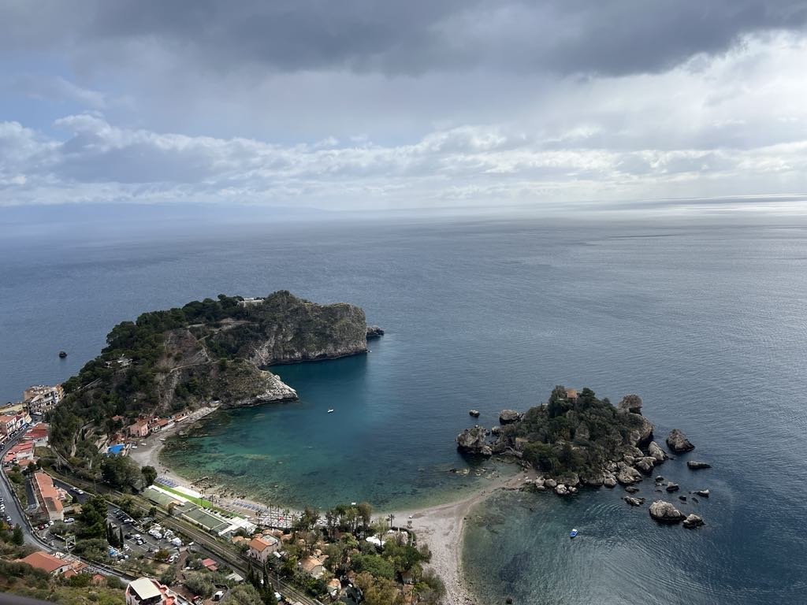

Taormina, malownicze miasteczko położone na wschodnim wybrzeżu Sycylii, to jedno z najbardziej urokliwych miejsc na włoskiej wyspie. Słynące z zapierających dech w piersiach widoków na Morze Jońskie i majestatyczny wulkan Etna, Taormina przyciąga turystów swoim niepowtarzalnym klimatem i bogatą historią.
Mapa miasta
Miejsca warte zobaczenia

Punkt Widokowy

Park Miejski

Wybrzeże